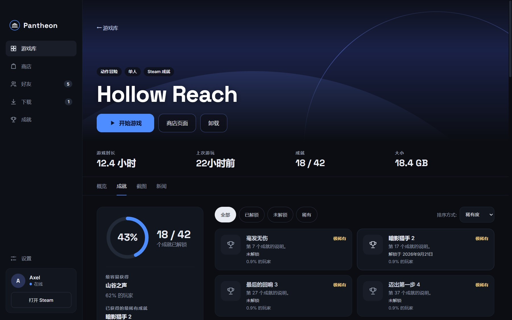
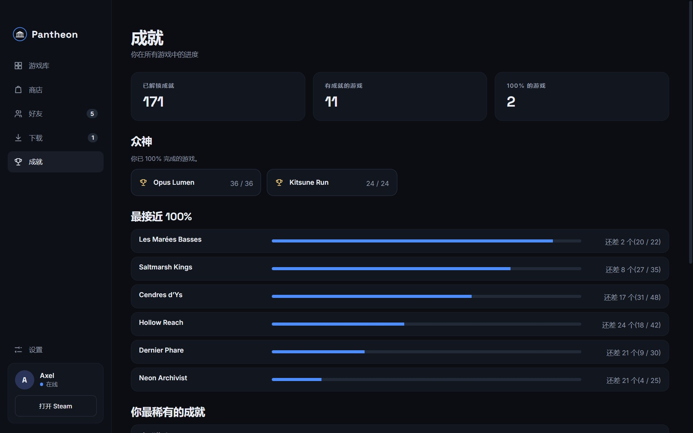
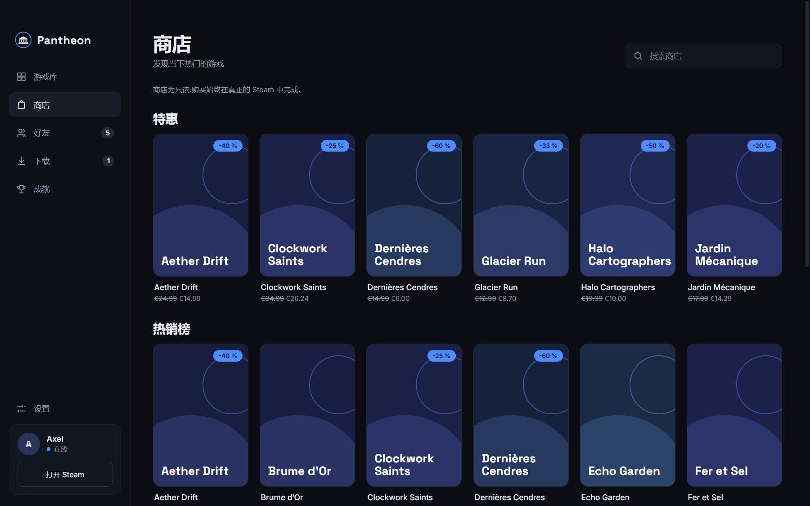
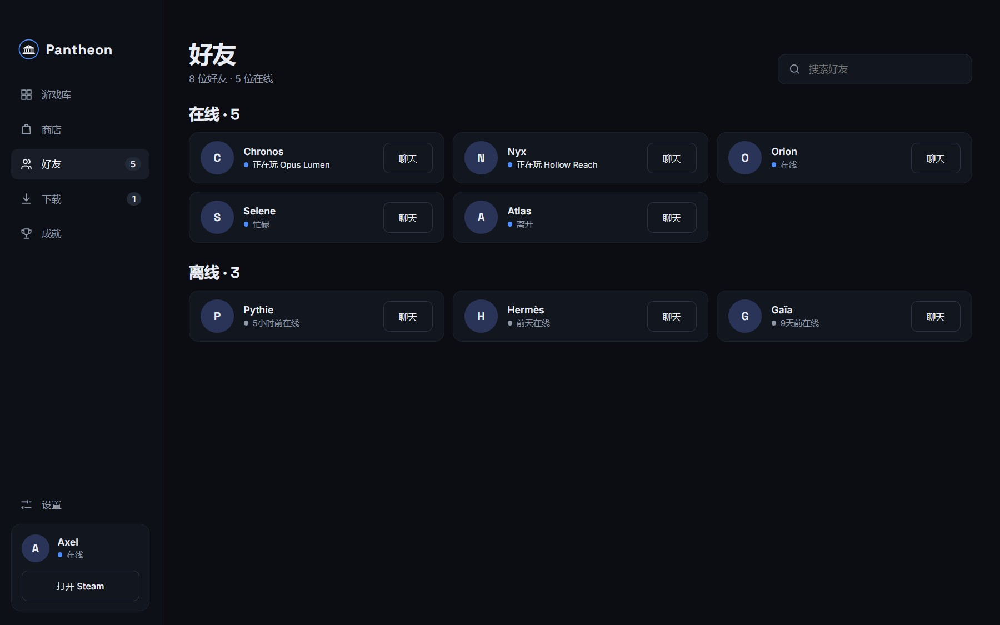

封面、留白、唯一的操作
网格把封面放在最显眼的位置。鼠标悬停时,中央会出现圆形的“开始游戏”按钮。最近玩过的游戏固定在顶部,一键即可继续。
- 搜索、筛选(已安装、下载、收藏、即将全成就)和排序
- 每张封面上显示安装状态和下载进度
- 数百款游戏依然流畅
Steam 功能齐全,但界面信息密集,成就要点好几次才能找到。这个学生项目源于一个简单的问题:如果 Steam 是为追求 100% 的人设计的,它会是什么样子?
我设计了视觉形象、界面和设计系统,然后把它们做成一个真正的 Windows 应用(Electron):它读取 Steam 的本地文件,并使用你自己的官方 API 访问权限。
Pantheon 并不取代 Steam:Steam 仍在后台运行,游戏依旧通过 Steam 启动。
只有一种蓝色强调色,专用于操作和进度。其余一切都为封面让路。设计的指导原则
网格把封面放在最显眼的位置。鼠标悬停时,中央会出现圆形的“开始游戏”按钮。最近玩过的游戏固定在顶部,一键即可继续。
进度环、带日期的已解锁成就,以及始终用文字写明的稀有度:普通、少见、稀有、极稀有。绝不只靠颜色区分。

你收藏的全局视图:已解锁总数、收纳 100% 完成游戏的“众神”区、最接近完成的游戏,以及你获得的最稀有成就。

特惠、热销榜、新品和搜索,均为只读。购买始终在真正的 Steam 中完成,点击“在 Steam 中查看”即可跳转。

好友按状态排序,并显示他们正在玩的游戏;“聊天”按钮会在 Steam 中打开对话。进行中的下载会显示进度,甚至体现在菜单的角标上。

所有截图都使用虚构的游戏和好友(应用的演示模式)。
极少的边框、宽裕的圆角和两套字体:标题和数字用 Space Grotesk,界面用 Inter。蓝色强调色只是一个变量,改一行就能换掉。
背景#0B0D12
表面#12161E
抬升表面#181D27
文字#E9ECF3
强调色#4D8DFF
标题和数字用 Space Grotesk,其余一律用 Inter。
全程可用键盘操作,焦点状态清晰可见,文字对比度至少 4.5:1,触控目标为 44 px,图标按钮都有名称,方便读屏软件使用。
所有文字都放在翻译文件中(目前五种语言),强调色只用一个变量。
读取你游戏库的界面,在安全性上必须无可挑剔。这个项目以与设计同样严格的标准构建。
无需登录 Steam。应用读取本地文件,并使用你自己的 API 密钥,密钥通过 Windows 保险库加密保存在你的电脑上。
上下文隔离、沙盒、严格的安全策略,Steam 链接仅限于白名单中的操作,网络仅限少数几个域名。
没有账号,没有使用统计,没有服务器:一切都留在你的电脑上。对 Steam 的请求会被缓存并设有上限。
45 项自动化测试覆盖 Steam 文件读取、稀有度计算、链接校验、缓存、API 客户端和翻译。
只需一个变量,就能在没有 Steam 的情况下用虚拟数据运行一切。本页的截图就是这样制作的。
图片懒加载、按卡片局部更新、屏幕外延迟渲染,让数百款游戏依然流畅。
需要 Windows 10 或 11,并已安装 Steam。由于安装程序没有签名,Windows 可能会显示警告:请点击“更多信息”,再点击“仍要运行”。
免费的非商业学生项目。